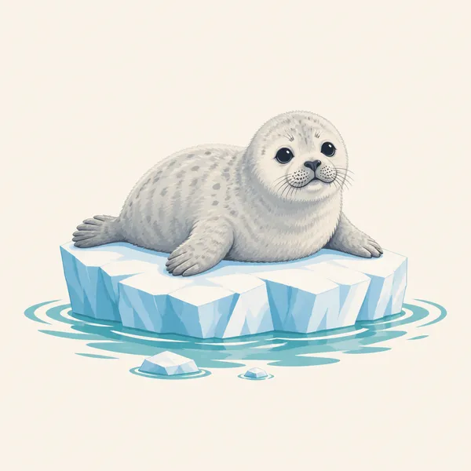
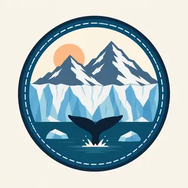

01
The tidewater face
Coolidge's proclamation, quoted on the natural-heritage page, hangs the monument on tidewater glaciers more accessible than other such regions in Alaska. The header is that sentence.
TrailMark Archive Edition
Alaska | Glacier Bay
A national monument on February 26, 1925. A national park and preserve on December 2, 1980.
Archive No. TM-GLBA-039
National Park since 1980
Collection Tidewater bay
Park Overview
Glacier Bay National Monument was designated on February 26, 1925. It became Glacier Bay National Park and Preserve on December 2, 1980.
The fact sheet lists those two dates, then a biosphere reserve in 1986 and a World Heritage Site in 1992, shared with Wrangell-St. Elias and Kluane National Park in Canada. The history page credits William S. Cooper's campaign and says the 1980 law would have made him smile. John Muir had already written the bay into the national idea of Alaska.
The management page states the purpose in one line: protect a dynamic tidewater glacial landscape and the natural successional processes that follow it, for science and discovery in a wilderness setting. The natural-heritage page quotes Coolidge's proclamation: tidewater glaciers of the first rank, forests of different ages, and ground still bare that would be forested within a century.
Emotional Thesis
Captain George Vancouver mapped the area in 1794 and showed the bay filled by one great glacier. The history page says Muir, eighty-five years later, found that ice retreating as fast as a mile a year. The painting is the later bay: a tidewater face, a ship, and a whale that this essay does not count.
Cooper came in 1916 to watch plants take bare ground. His page says the ground can become spruce and hemlock forest in about a century. The park was argued as a laboratory before it was argued as a view.
Landscape Highlights
01
Coolidge's proclamation, quoted on the natural-heritage page, hangs the monument on tidewater glaciers more accessible than other such regions in Alaska. The header is that sentence.
02
Mature forest, young trees established since the ice left, and stretches still bare: that is the proclamation's plant list. Cooper's plots, begun in 1916, are still studied.
03
ANILCA in 1980 extended the park northwest toward the Alsek River and Dry Bay. An earlier expansion in 1939 had already more than doubled the monument. The monument-formation page says Glacier Bay was then the largest unit in the park system, a distinction it later lost.
Wildlife
The pages opened here center the ice, the plants, and the human fight. They do not give this essay a whale count or a seal count.

01
The header whale is an illustration beside the tidewater face. Treat it as a painting.
02
The extra drawing is a young seal on a small floe. The 1974 end of Native seal hunting is a legal history, not a caption for this animal.
03
Succession is the wildlife story the proclamation actually tells: fauna moving onto ground the ice has left. Species lists belong to the park's current sheets.
Geology
Vancouver's 1794 map and Muir's mile-a-year retreat are the history page's before and after.
01
The proclamation calls the glaciers a scientific opportunity and mentions relics of ancient interglacial forests. The forest in the ground is older than the latest advance.
02
The 1939 boundary and the 1980 Alsek extension are map geology as much as politics. They took in more of the same ice-to-forest sequence.
03
No glacier length is copied beyond the mile-a-year phrase. Today's terminus is an NPS map, not this essay.
A mile a year was Muir's pace, not a forecast. How far a given face has moved this decade is a research question on the park site.
The management page calls it a marine park: inlets, coves, and harbors. Boat rules and whether a ship runs are current.
A century from bare ground to spruce and hemlock is Cooper's summary. You can walk that sequence only where the park says the ground is open.
This essay does not invent a snowfall total. The wilderness setting in the purpose statement does not close in September, but access does change. Read NPS.
Photography
Ice alone is a postcard. The proclamation is ice plus the forest that follows it.
01
A ship or a floe keeps the face from becoming a white wall. The header uses both a ship and a whale. The whale is not a guarantee.
02
The drawing is calm. A real animal on ice sets the distance, and the 1974 history is a reminder that people have already argued over these animals.
03
Photograph the bare, the shrubs, and the tall spruce as one story. That is Cooper's park.
Field Notes
Vancouver drew a bay full of ice. The park exists so someone can still watch what grows where that ice was.
TrailMark Field Notes

Badge Story
The mark is tidewater: ice meeting the bay. A summit without water would be another Alaska park.
Calving face, floes, a dark ridge.
A seal or a whale can be the animal. Neither is a count.
Do not reuse Denali's road and tundra. This approach is by water.
Archive No.039
LocationGlacier Bay
ReleaseTidewater Mark
Stewardship / Safety
The management page calls Glacier Bay a homeland and a living laboratory. Boat access, distances, and wildlife rules are on NPS.
The retreat of the ice is not a dare to approach a calving face. The park sets the distance.
Seal and whale pictures are not a permit. The drawing is not a sighting.
Mining history and the private claim under the Brady Glacier are reminders that the boundary was argued. Stay on the public side of any closure.
Lingít history is part of the bay. Treat cultural sites the way the park asks.
Current conditions, fees, and alerts are on the National Park Service site.
Continue the Archive
Wrangell-St. Elias shares the World Heritage listing and is not published in this archive yet. Gates of the Arctic is the roadless mountain park in this batch.